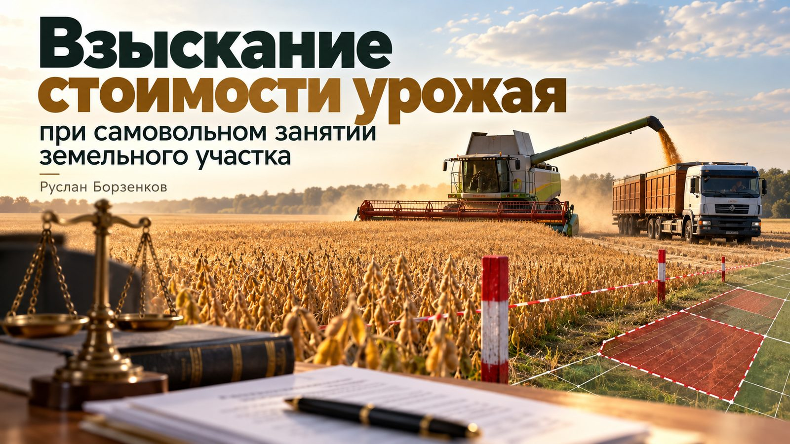
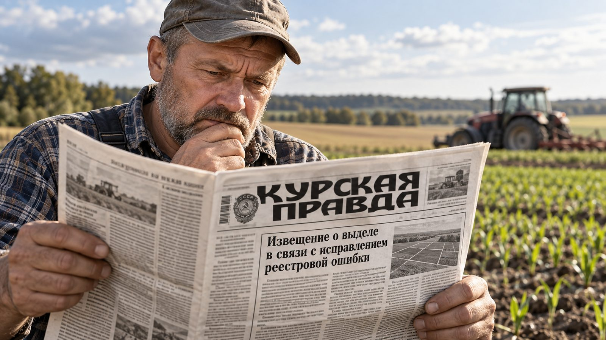
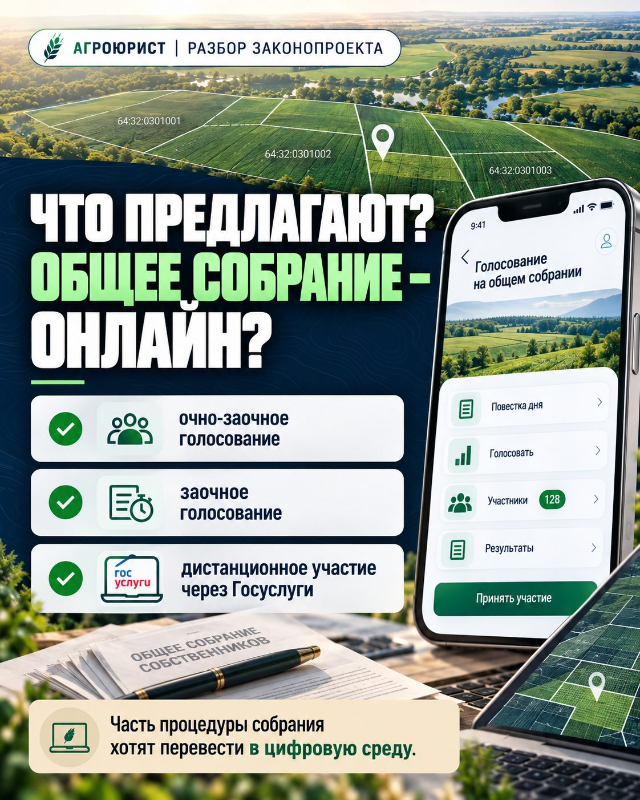
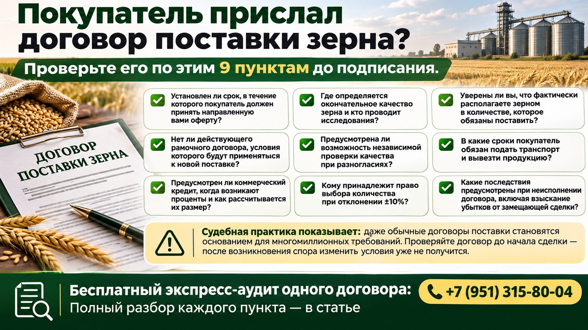

Из блога
Все статьи — на странице «Блог»

Новые субсидии для аграриев: где деньги и какие сроки нельзя пропустить

630 млн ₽ на озимые Курской области: кто и как получит поддержку

Субсидии на технику и лизинг: за какие покупки вернут часть денег

Взыскание стоимости урожая при самовольном занятии участка

Извещение о выделе под видом исправления реестровой ошибки

Что предлагают? Общее собрание — онлайн?

Покупатель прислал договор поставки зерна? 9 пунктов проверки